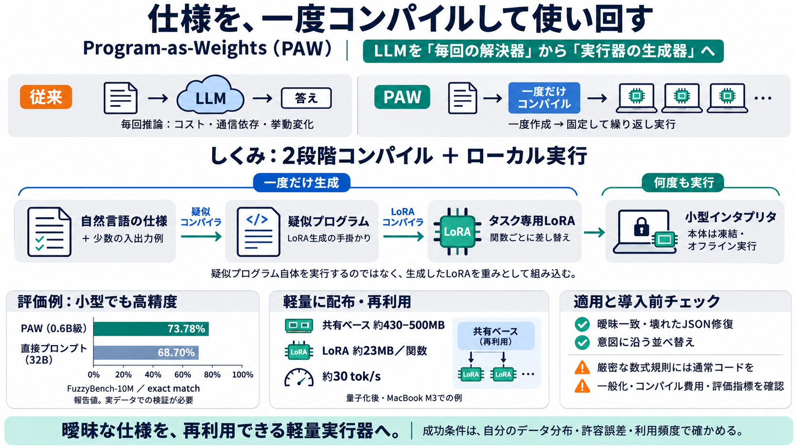

Program-as-Weights:A Programming Paradigm for Fuzzy Functions
##### Compiler vs. no compiler. Table 5 compares PAW with three same-base “no compiler” baselines on FuzzyBench: full f…

仕様を“実行器”へ
自然言語の曖昧な関数仕様を、一度コンパイルして小型インタプリタで再利用する枠組み：PAW。
毎回LLMは高い
曖昧関数を解くたびにLLM APIへプロンプトすると、推論コスト・ネットワーク依存・更新による挙動変化が積み上がります。
質問→手順書
PAWは、LLMに“毎回答えさせる”代わりに、仕様から“手順書（実行器）”を作る。
二段階コンパイル
PAWは(1) 疑似プログラムへ変換し、(2) それをLoRAアダプタにして、(3) 固定インタプリタへ注入して動かす。
何が“固定”される？
PAWの要は「インタプリタ本体を凍結」し、関数ごとに軽いアダプタだけ追加する設計にあります。
小型が勝つ
0.6B級の小型インタプリタにPAWを適用し、exact match 73.78%を達成。Qwen3-32Bの直接プロンプト 68.70%を上回ると報告されています。
“コンパイラ”が差
Web情報では、同じ予算・同じ基盤モデルで「コンパイラ無し」手法（固定LoRAや固定の微調整等）に比べ、PAWが大きく上回り、その差は“コンパイラ生成LoRA”に由来すると整理されています。
疑似プログラムの役割
疑似プログラムは最終的にそのまま走るコードというより、LoRA生成の手掛かりとして扱われます。
運用イメージ
一度コンパイルすれば、その後はローカルで高速・低コストに繰り返し使えるようにする設計です。
向く/向かない
PAWが得意なのは、入力と出力対応が学習可能で、かつ記号ルール化が難しい領域です。
“導入前の確認”
PAWは有望ですが、一般化・失敗パターン・コンパイルコスト・指標整合の確認が必要です。
結論
PAWは「自然言語仕様→タスク専用の軽量実行器」というパイプラインで、運用コストと再現性の課題を“コンパイル設計”で置き換えます。
##### Compiler vs. no compiler. Table 5 compares PAW with three same-base “no compiler” baselines on FuzzyBench: full f…
## Training The pseudo compiler is never trained, it's just prompted. Only the LoRA compiler, and a small mapper that p…
The honest caveat is that the parity claim is measured on the authors' own FuzzyBench distribution, and the paper is a s…
Program-as-Weights (PAW), in which a 4B compiler trained on FuzzyBench, a 10M-example dataset we release, emits paramete…
Not "replace every LLM call." Not "agents are over." A narrower and more useful take: Some prompts want to become funct…